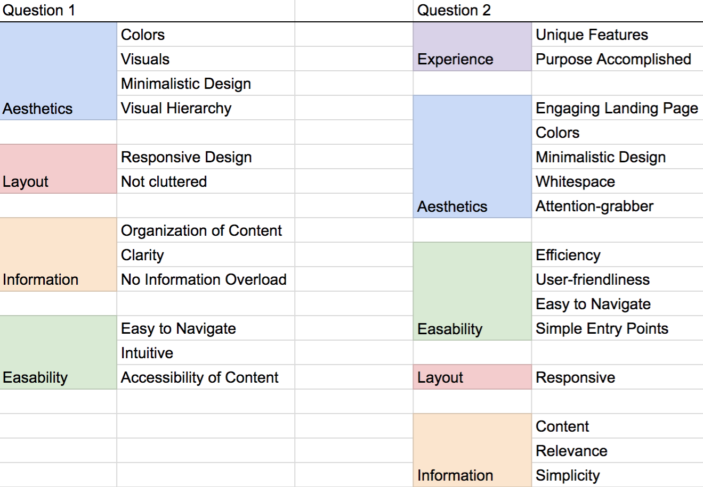
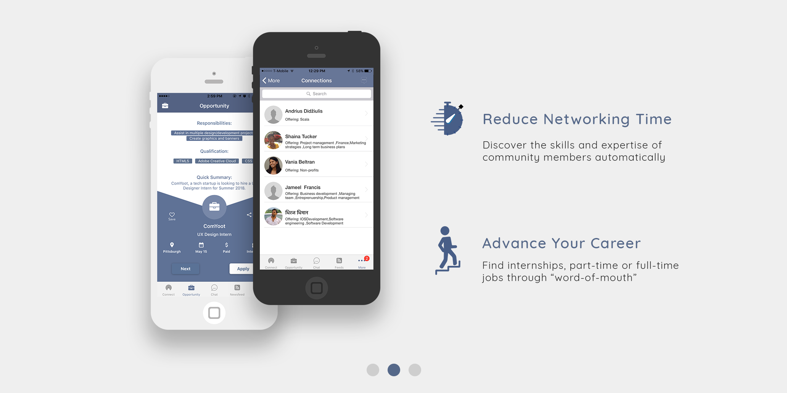

ComYoot is a mobile app that helps users easily share their skills, services and job opportunities within their community. As a Web Frontend Developer and UX/UI intern, I conducted competitive analysis as well as user studies for the ComYoot website. After my research, I developed mockups and implemented my designs in HTML, CSS and JavaScript.
I analyzed competitors and the current ComYoot website, taking note on the following:
Overall UI Design
Took into account colors, organization of content, visuals (icons, logo, images, etc.), and other elements.
Navigation
Analyzed the navigation that each website had. Many startups have the one-page website layout broken up into different sections (About Us, How The App Works, etc.). Some provide a navigational bar with links that scroll to the section when clicked while others have no navigation.
Content Hierarchy
Examined how each company organized, grouped and prioritized their content.
Content Relevance
Took note of what kind of content each company provided.
Responsiveness
Inspected if each website was mobile friendly.
I conducted about thirty user studies with a set of questions that gave insight in how users interact with a website and how users felt about the current ComYoot website. Questions from the User Studies:
What element do you appreciate most in a website?
What's your favorite website and what do you like best about it?
After seeing the company's website, what don't you like about this website?
For you to click a download link for a mobile app from a website, what message or image would you need to see to convince you that this app will be useful?
For the first two questions, I saw patterns and repetitions in the responses. I organized responses into the following colored categories:
Note: The sub-categories from each colored category are simplified versions of the responses I received in the user studies.
For the third question, one of the biggest problems that participants commented on was that they had no idea what the website was for right when they veiwed the landing page. They did not know the website was promoting the ComYoot app at first. Another common response was that people found the text illegible at certain sections of the website due to the color of the text or background.
For the fourth question, many participants mentioned that they like to see screenshots of the actual app. Seeing how the app works through these screenshots shows them its usefulness and main functions. Another common response was that they wanted to see reviews of the app from real people, which would establish a sense of trust.
I developed several insights from the user studies:
Viewers need to see why this app will replace their current actions.
Visitors prefer to see the app's interface to understand the features.
Concise, yet informative phrases help visitors understand what the company is offering.
I created a few mockups for some of the sections in the website to show the general direction I wanted to take when designing the website. The following mockups are for the "Why ComYoot" section, showing the different features and the corresponding screenshots:
After conducting research and creating mockups, I coded the website using the Bootstrap framework.